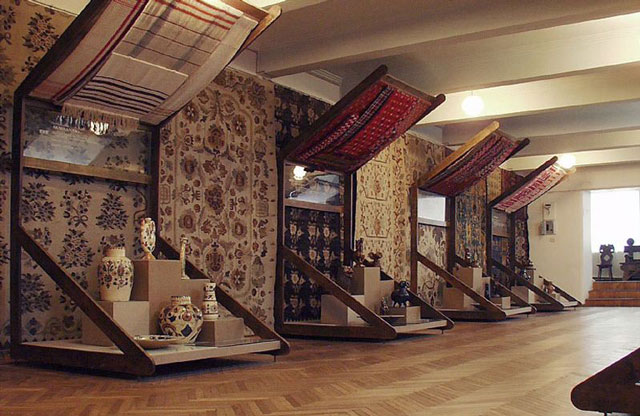
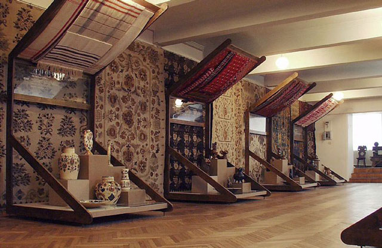

CENTER
Unlike the big cities of the Ukrainian south and east, the cities of the central Ukraine are among the oldest in Ukraine, among which are: Poltava, Kryvyy Rih.
Also in contrast to the southeastern portion of the country, the region is more agricultural with extensive grain and sunflower fields in the heart of Ukraine.
Surzhyk, a term for mixed Russian-Ukrainian dialects, is commonly spoken throughout Central Ukraine, though, according to RATING and Research & Branding Group, most of the people self-identify as Ukrainian speakers.
In the major cities of Central Ukraine, Russian is the primary spoken language.
Unlike the big cities of the Ukrainian south and east, the cities of the central Ukraine are among the oldest in Ukraine, among which are: Poltava, Kryvyy Rih.
Also in contrast to the southeastern portion of the country, the region is more agricultural with extensive grain and sunflower fields in the heart of Ukraine.
Surzhyk, a term for mixed Russian-Ukrainian dialects, is commonly spoken throughout Central Ukraine, though, according to RATING and Research & Branding Group, most of the people self-identify as Ukrainian speakers.
In the major cities of Central Ukraine, Russian is the primary spoken language.
 

Poltava Museum of Local Lore named after Vasyl Krychevsky
Poltava Museum of Local Lore named after Vasyl Krychevsky, as a significant scientific and cultural center, founded in 1891 on the initiative of prominent scientist Professor VV Dokuchaev,
who transferred more than 4,000 soil samples, about 500 samples of rocks, 862 herbarium sheets. Among the patrons was Kateryna Skarzhynska (1854–1932), a native of Poltava Province, who donated more than 20,000 exhibits and a scientific library. During 1894–1913, Pavlo Bobrovsky donated valuable collections of oriental antiquities to the museum.
And today the funds are a unique collection of antiques, life and folk art, which includes not only local material, but also antiquities of different parts of the world:
Ancient Egypt, India, Japan, China, Indonesia. The real pride of the museum is the Cossack antiquities, in which the high spirit of freedom and independence has been preserved.
And in total in a museum about 300 thousand exhibits.
Karachunovsky granite quarry
The Karachunovsky granite quarry has long attracted climbers, especially in winter, when icicles grow.
An unusually beautiful place. A former granite quarry that has ceased to be used.
Water was launched into it - and it turned out to be an awesome lake, with high steep cliffs, overgrown with trees and bushes.
The quarry has its own attraction - a small waterfall "White stones", flowing down the granite steps.
It is located not far - near the dam of the Karachunovskoye reservoir.
Advantages: a quiet, peaceful place, away from civilization, alone with nature.